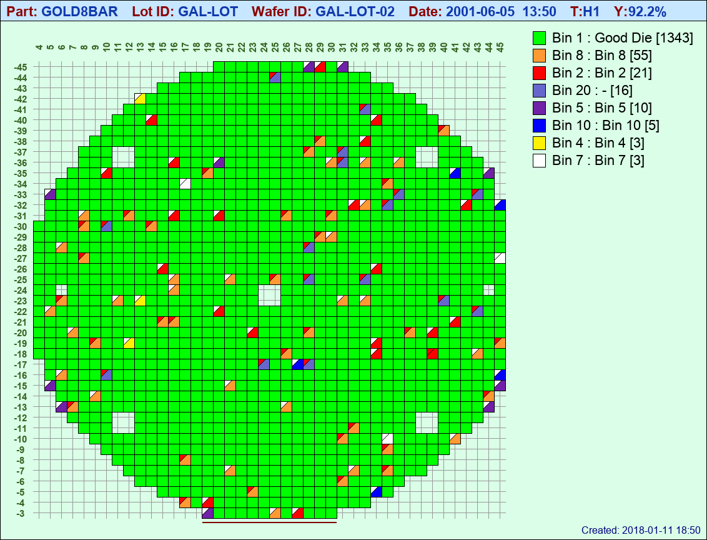
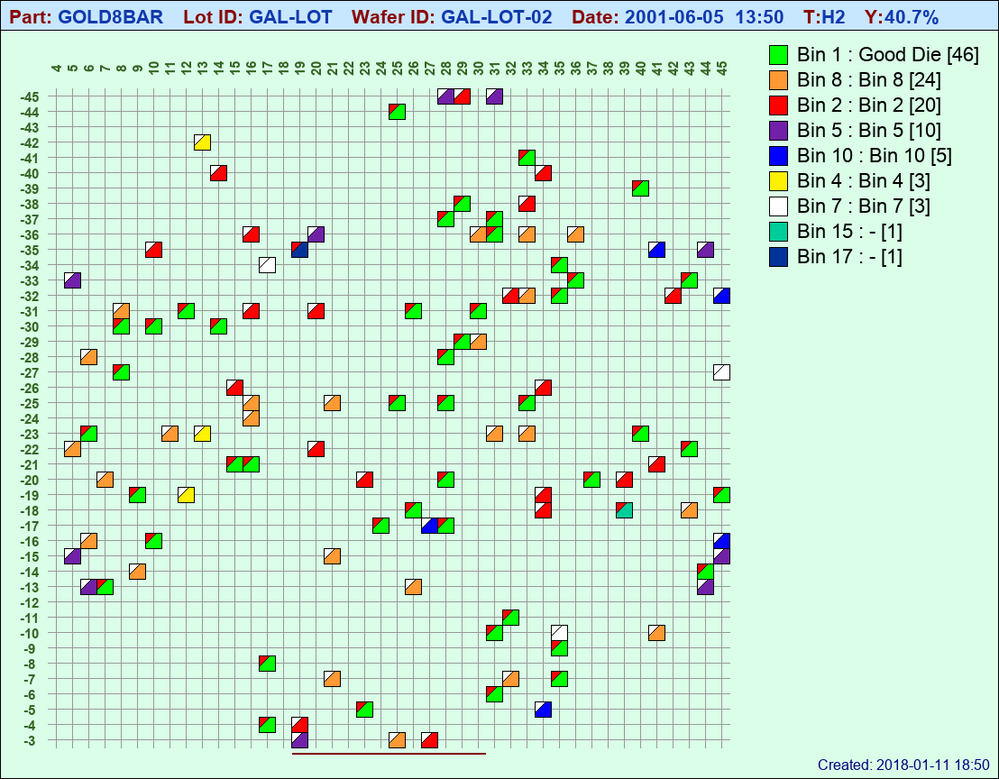
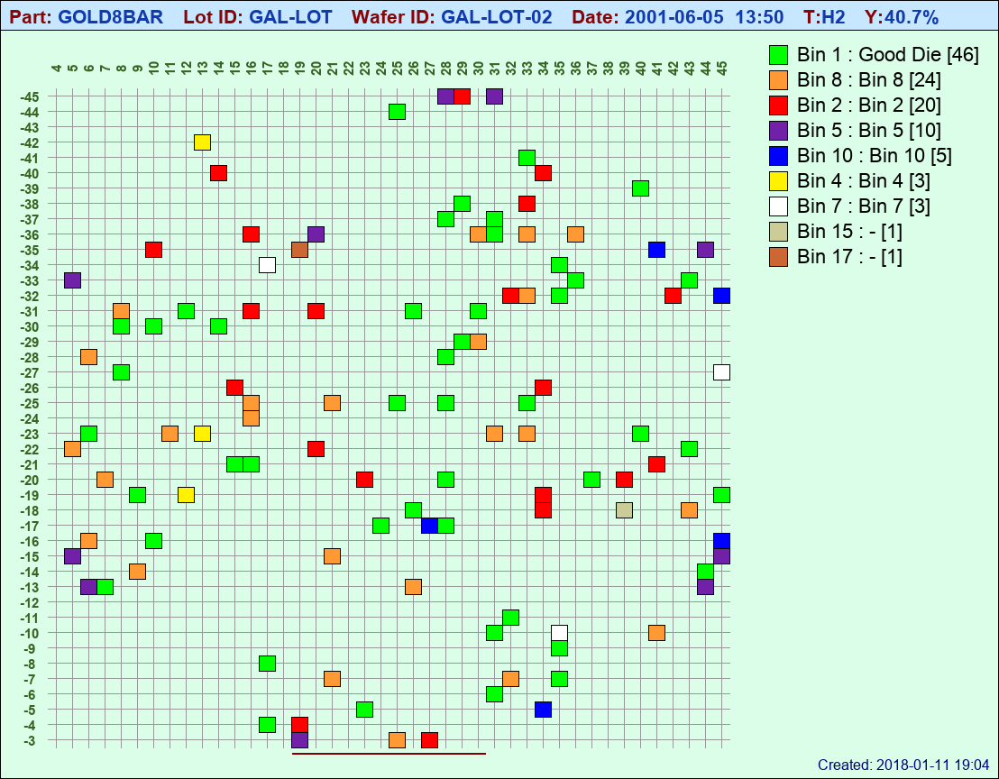

Multiple Test Flagging¶
If any duplicate PRR X_COORD / Y_COORD combinations are found between a WIR and corresponding WRR, a duplicate testset is created which is typically the result of retesting failed die. These testsets are numbered 1,2,3 ... etc. in the order they are found in the STDF file. By default, stdf2map will generate a map for each wafer AND testset combination found in an STDF file unless specific wafers and testsets are called for using the -w and -t command line options respectively.
Wafers with multiple testsets will contain flags unless you specifically disable flagging with -f . Both lot2 and lot3 in the sample STDF directory contain single wafers with multiple testsets.
Flags show up as a colored triangle in the upper left corner of a die. and for any given die, the flag will be white if ALL testing on that die resulted in the same bin number. It will be red if testing between any testset resulted in conflicting Bin numbers.
Try:
$ stdf2map -v lot2
Two maps will be created and the viewer will show test set #1 by default
TestSet #1
TestSet #2
So, for this particular wafer, they did indeed retest the failing die, and many of them passed the second time around
Both the flag size and color are configurable in stdf2map.config. Below are the default configuration settings dealing with flags:
# --------------- Fiag Section Group ---------------------
[flag]
show = true
# Flag color if Bin results the SAME for all test sets
duplicate_color = '#FFFFFF'
# Flag color if Bin results DIFFERENT across test sets
split_color = '#FF0000'
# size of flag as a ratio of diesize
# flagsize = diesize/size_factor.
# (i.e. smaller numbers = bigger flag)
# Typically you would want a slightly smaller number
# for smaller die to increase the apparent flag size.
# A number of 1.0 would divide the die in half
# corner to corner (Use a minimum of 1.0)
size_factor = 2.5
Flag size_factor is something you will likely want to set in a part-based configuration file, as the relative size needs to be increased with smaller die for the flag to be visible.
Flagging can be disabled with the -f command line option and you can select a specific testset with the -t option, for example:
$ stdf2map -v -f -t2 lot2
TestSet #2
